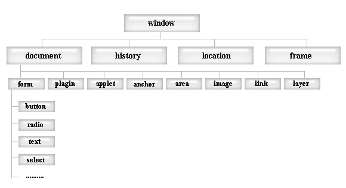

Вписываю скрипт в head - будет простейшая программа, для примера. Hello World!!! - это и есть моя программа.
document.write("Hello World!!!"); - это оператор (инструкция):
При интерпритации html-страницы браузер создаёт объекты JS. Они хранятся в виде иерархической структуры, отражая структуру документа, например:
На самом верхнем уровне объект window - это окно браузера, являющееся "родителем" всех остальных объектов. Расположенные ниже могут иметь свои подчинённые объекты. document (текущая страница) может иметь дочерний объект form (форма), и т.д.
Все объекты имеют методы (отделяются от объекта точкой), например:
document:write позволяет писать текст в текущую страницу
document.open - открывает новое окно браузера
Также объекты имеют свойства, например:
document.bgcolor - содержит значение фонового цвета текущей страницы
document.title содержит заголовок страницы
Все инструкции програмного кода заканчиваются точкой с запятой!
Что бы сценарий выполнялся не сразу (как в Hello World), а после действий пользователя, необходимо в тегах элемента указать параметры обработки событий, задающие действия, выполняемые при возникновении события, связанного с элементом. Например:
Здесь Click - событие (щелчок по div). onClick - обработчик события, addText() - имя функции, которая сработает при возникновении этого события (щелчка по div)
События, которые поддерживаются JS: (запоминать все не стоит - можно пользоватся таблицей этой)
| событие | когда происходит | обработчик события |
|---|---|---|
| Blur | потеря объектом фокуса | onBlur |
| Change | пользователь изменяет значение элемента | onChange |
| Click | пользователь щелкает мыщью по объекту | onClick |
| DblClick | пользователь делает двойной щелчок мышью по объекту | onDblClick |
| DragDrop | пользователь перетаскивает мышью объект | onDragDrop |
| Error | возникновение javascript-ошибки | onError |
| Focus | окно или элемент формы получает фокус | onFocus |
| KeyDown | пользователь нажимает клавишу клавиатуры | onKeyDown |
| KeyPress | пользователь удерживает нажатой клавишу клавиатуры | onKeyPress |
| KeyUp | пользователь отпускает клавишу клавиатуры | onKeyUp |
| Load | документ загружается в браузер | onLoad |
| MouseDown | пользователь нажимает кнопку мыши | onMouseDown |
| MouseOut | указатель мыши выходит за пределы элемента | onMouseOut |
| MouseOver | указатель мыши помещается над элементом | onMouseOver |
| MouseUp | пользователь отпускает кнопку мыши | onMouseUp |
| Move | пользователь перемещает окно | onMove |
| Reset | пользователь нажимает кнопку "reset" формы | onReset |
| Resize | пользователь изменяет размеры окна или элемента | onResize |
| Select | пользователь выбирает элемент формы | onSelect |
| Submit | пользователь нажимает кнопку "submit" формы | onSubmit |
| Unload | пользователь закрывает документ | onUnload |
Функция - это именованная последовательность операторов (инструкций). Любая функция имеет следующий синтаксис:
function имя () {
оператор;
.........
оператор;
}
Сначала идёт ключевое слово function, затем имя функции, затем в круглых скобках перечисляются параметры (если есть), затем в фигурных скобках перечисляются операторы, т.е. последовательность вполняемых действий. Каждый оператор заканчивается точкой с запятой.
Пример:Когда щёлкаешь - появляется поп-ап, с текстом. Всё просто , смотри в JS - там всего 1 функция для этого с 1 строкой.
Использовал тут alert - стандартная функция, выводящая сообщение на экран.
JS имеет стандартный набор функций (как alert) и можно самому писать функции - пользовательские. Об этом позже.
Общий механизм рабоыт обработки событий:
Пишу пример, который будет считать площадь прямоугольника:
Делаю функцию, задаю 3 переменные - указываю, что каждая переменная это значение соответствующего поля (1 из 3 выше), пишу что делать с этими значениями (умножить).
Для значения а - document.form1.t1.value, аналогично для b, для итоговой - s=a*b; и document.form1.res.value=s;
Если писать функцию как в пред. уроке - то надо будет для каждой страницы писать её заново. Что б на писать функцию 1 раз и использовать на разных страницах - применяют параметры(те, которые в круглых скобках)
Ту же форму буду писать, но уже с универсальной функцией:
Итого:
1.Пишу функцию в JS - указываю параметр obj (function areaRectangle1(obj)), и саму функцию переписываю так, что б везде был obj этот (вместо a=document.form1.t1.value; пишу a=obj.t1.value; и т.д.)
2.Потом когда указываю что надо вызвать эту функцию, прям в html пишу в скобках параметр (какой именно это obj) - onClick="areaRectangle1(form2);"
3. Всё, теперь функция будет работать с указанной form2 в параметрах. Т.е. - одна функция, но будет работать на всех листах html в которых задам вызов этой функции и подходящий параметр.
Пример с квадратами 3-ёх цветов и сообщением для каждого:
Итого:
1. Создаю функцию, которая будет выводить сообщение, которое является параметром функции: function message(m) {alert (m);}
2. В html создаю 3 квадрата (div) к которым прописываю вызов функции + в параметре этой функции пишу само сообщение: onClick="message('Вы нажали на красный квадрат');"
3.Соответственно, когда кликаю на квадрат - вызывается ф-я, ей передётся параметр (сообщение), которое ф-я и выводит.
Пишу пример, объединяющий 2 предыдущих:
Итого (пример действительно связал 2 предыдущих):
1. Пишу ф-ю, в которой указываю 2 параметра: function showDesc (obj, n) {obj.desc.value=n;}, где desc - имя текстового поля для вывода описаний, а obj - потом (при указании в html) будет форма с этим текстовым полем. n - соответственно текст, который будет выводится.
2. Пишу ф-ю для удаления текста при отведении мыши с элемента: function delet(obj) {obj.desc.value=' ';}
3. Создаю form и textarea - name="desc" - сюда будет выводится текст
4.Пишу список в html с названиями ягод и каждому li задаю onMouseOver ="showDesc(form3, 'текст описания')" и onMouseOut="delet(form3);"
На этом урок по сценариям окончен. Тут всё просто - смотри если что в код - всё поймёшь!